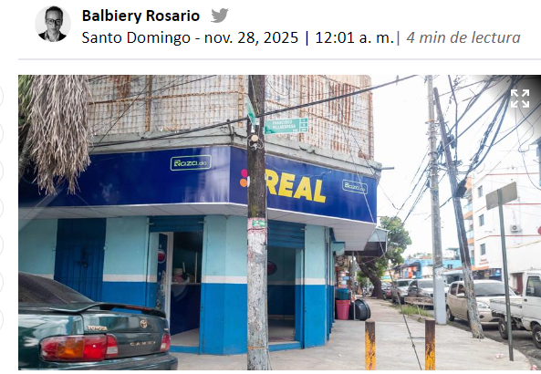
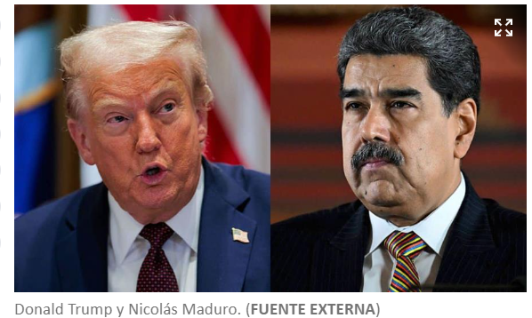

EL TC anula ordenanzas que prohibían nuevas bancas de lotería en Azua
Escrito por Luis Angel Rojas el 14 de Octubre

El Tribunal Constitucional (TC) declaró no conforme con la carta magna el primer artículo
de dos disposiciones del Concejo de Regidores del Ayuntamiento Municipal de Azua que habían
limitado
la proliferación de bancas de lotería en esa localidad.
Se trata de la Ordenanza 12-2014, aprobada en septiembre del 2014, en la que se prohibió
la instalación de nuevas bancas de lotería y la Ordenanza
08-2019, en la que el Concejo
decidió no otorgar nuevas certificaciones de "no objeciones" para permitir la operación
de más centros de apuestas en el territorio azuano.
mas informacion
Trump y Maduro mueven fichas en medio de escalada retórica y amenazas de acción militar
Escrito por Luis Angel Rojas el 19 de Octubre

Donald Trump advirtió este jueves que las Fuerzas Armadas estadounidenses actuarán "muy pronto"
en tierra contra supuestos "narcotraficantes de Venezuela", mientras Nicolás Maduro exhibió el
músculo de la Aviación venezolana y llamó a defender el territorio, lo que intensificó el choque
retórico entre ambos presidentes y la tensión derivada por el despliegue aeronaval de EE. UU. en
el
mar Caribe.
"Probablemente han notado que las personas ya no quieren entregar (las drogas) por mar, y empezaremos
a detenerlos por tierra. Además, por tierra es más fácil, pero eso va a comenzar muy
pronto. Les
advertimos de que dejaran de enviar veneno a nuestro país", declaró Trump en una llamada de Acción
de Gracias con militares.
El republicano, quien no detalló en qué consistirían las acciones
en tierra, destacó los ataques
en el Caribe y en el Pacífico, donde las fuerzas estadounidenses han matado a más de 80 personas
al destruir más de 20 lanchas supuestamente ligadas al narcotráfico, en su
mayoría de Venezuela,
desde el 1 de septiembre, acciones que forman parte de un despliegue militar que Maduro interpreta
como un intento para sacarlo del poder.
mas informacion